Префектура Кагосима · залив Кинко · еда и ремёсла
Вкус залива Кинко: свинина, сётю, рыба и стекло Кагосимы
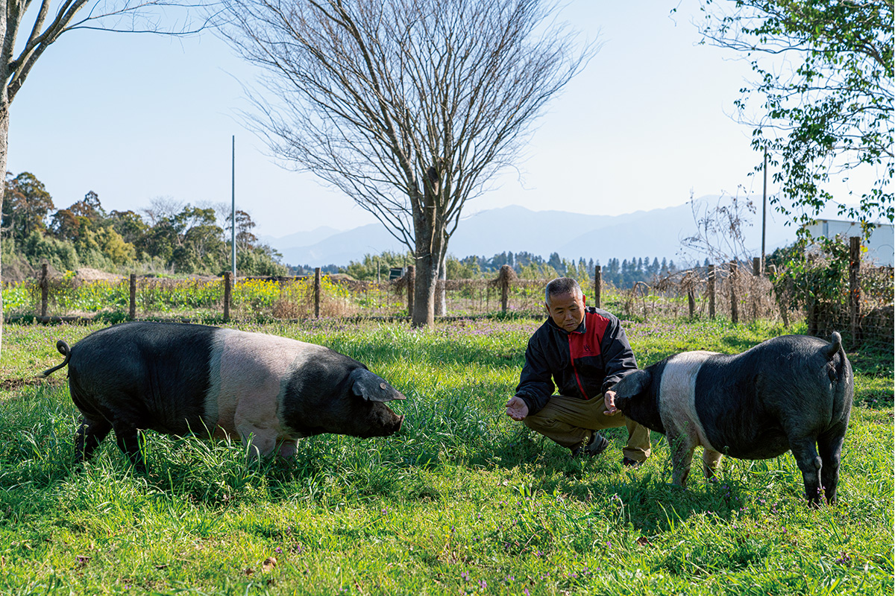
Префектура Кагосима славится чёрной свиньёй, рыбой залива Кинко и сётю. Но кроме знаменитой классики здесь есть фермы, бары и мастерские, ради которых стоит проехать вокруг всего залива.
Вкусы
Чем кормит земля Кагосимы
Если спросить японца о еде Кагосимы, он назовёт чёрную свинью куробута, местную курицу, мелкую рыбку кибинаго и рыбные котлеты сацума-агэ. Местных блюд здесь очень много, и обязательно стоит попробовать тонкоцу из свинины и «сакэдзуси», суши на местном сакэ.
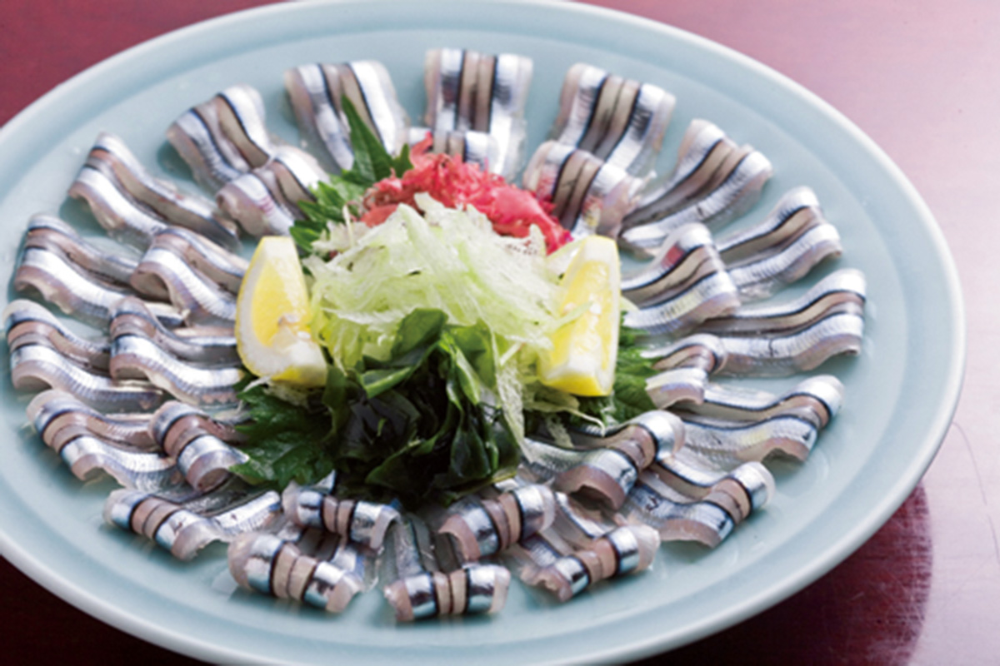
Классика классикой, но интереснее то, что появилось в последние годы: ферма, где растят породы свиней, которых больше нет нигде в Японии, бар, где сётю рассказывают как историю, и рестораны с рыбой и говядиной, которыми префектура гордится по праву.
Залив Кинко спокойный, и рыбу здесь начали разводить очень рано. По выращиванию желтохвоста и амберджека Кагосима первая в Японии. Первая она и по японской говядине: на конкурсе вагю, который проходит раз в пять лет, местная чёрная говядина получила высшую награду.
Свинина
FUKUDOME SMALL FARM: колбасы по немецкой школе
Ферма стоит в городе Каноя на полуострове Осуми, на восточном берегу залива. Её глава учился свиноводству в Нидерландах, а его младший брат получил в Германии звание мастера мясника. Братья растят две породы, которых в Японии больше нет ни у кого: сэдлбэк и «Кофуку-тон», «счастливую свинью», и сами делают из них ветчину и колбасы.
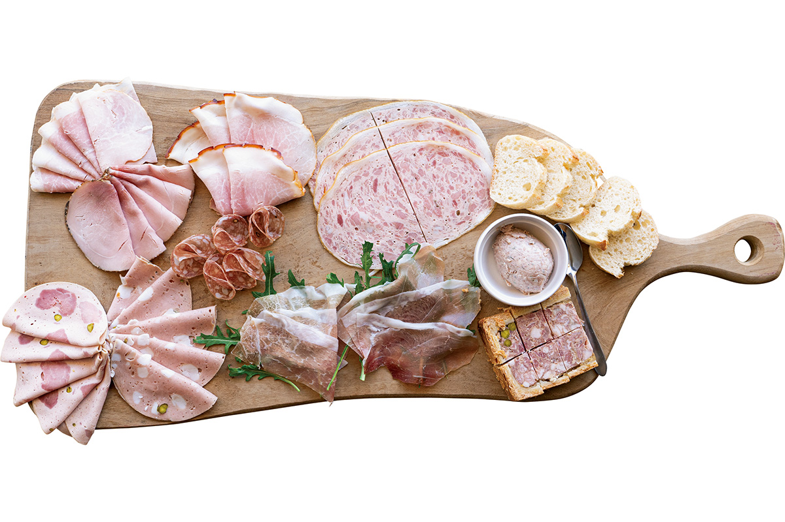
Свиней здесь растят, перерабатывают и продают в одних руках, а в магазине при ферме лежит около двадцати видов мясных изделий. Мясо разделывают так, чтобы ничего не пропало, а специи для колбас мелют на мельнице сами. На эти изделия обращают внимание даже повара из Токио. Особенно хорош жир сэдлбэка, поэтому её рекомендуем попробовать и в виде сябу-сябу.
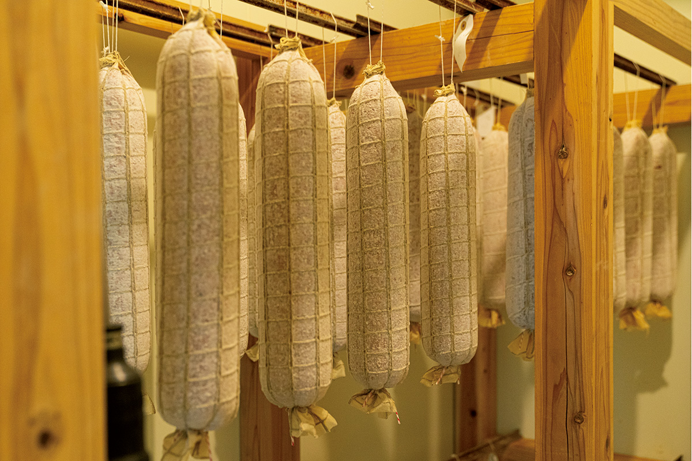
FUKUDOME SMALL FARM
- Адрес
- префектура Кагосима, город Каноя, Сисимэ-тё, 81-1
- Телефон
- +81 994-48-2324
- Часы работы
- 10:00–17:30
- Выходные
- понедельник, вторник
Сётю
«Исидзуэ»: бар, где сётю объясняют
На полках бара «Исидзуэ» в квартале Тэммонкан стоят больше 1500 марок сётю от всех винокурен префектуры. Хозяин рассказывает о сётю всё: историю, способы перегонки, характер каждой винокурни и новые течения. Послушать его приходят даже сами винокуры.
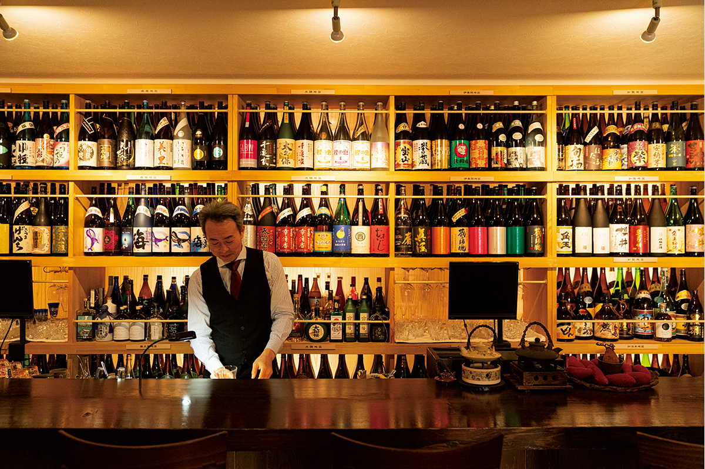
По его словам, сётю интересен тем, как сильно разнится его вкус. Хозяин следит и за новыми приёмами: одни винокуры дают батату вызреть, и сётю получает аромат личи, другие нарочно оставляют напиток мутным. Здесь можно узнать о сётю то, чего не расскажут в обычном баре.
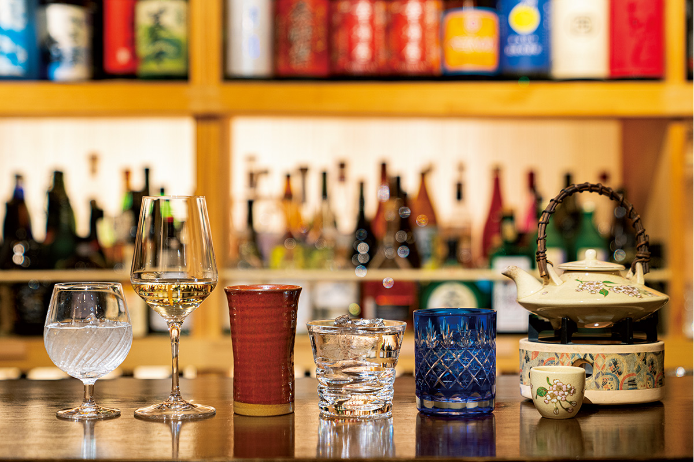
Бар «Исидзуэ»
- Адрес
- префектура Кагосима, город Кагосима, Сэннити-тё, 6-1, здание «Тэммонкан Флауэр», 4-й этаж
- Телефон
- +81 99-227-0125
- Часы работы
- 20:00–3:00
- Выходные
- нерегулярно
Рыба
«Дайгоро»: желтохвост и амберджек залива Кинко
Рыбу залива Кинко лучше всего есть сырой, и для этого рекомендуем «Дайгоро». Хозяин заведения заядлый рыбак. Каждый день он покупает лучшую рыбу на рынке в пяти минутах езды и собирает из неё ассорти сашими.
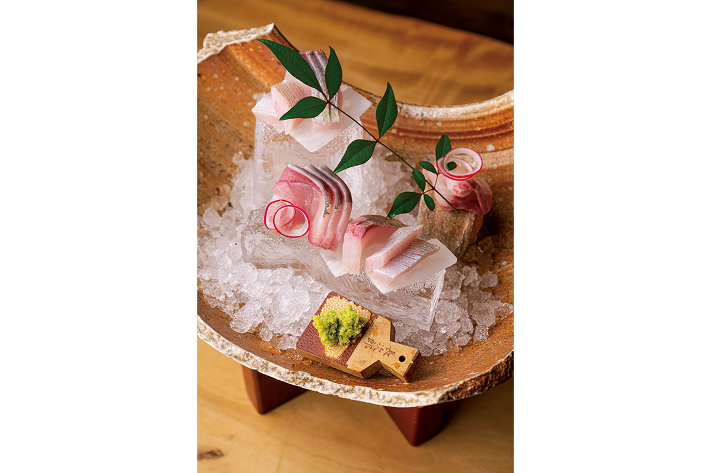
В ассорти идут желтохвост, амберджек, рыба-сабля, осьминог, ставрида сима-адзи и морской лещ, который весной заходит в залив из открытого моря на нерест. Всё это подают с двумя соевыми соусами: сладким кагосимским и острым. В конце ужина рекомендуем заказать рис с лещом, сваренный в глиняном горшке.
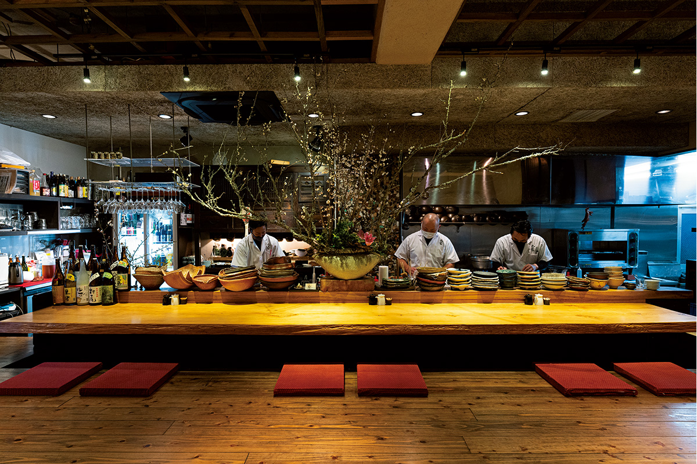
«Дайгоро»
- Адрес
- префектура Кагосима, город Кагосима, Хигаси-Сэнгоку-тё, 4-33, здание «Фиорэ Хигаси-Сэнгоку», 1-й этаж
- Телефон
- +81 99-222-2013
- Часы работы
- 17:00–23:00
- Выходные
- понедельник
Местная кухня
«Кумасотэй» и «Карэн»
Ресторан «Кумасотэй» открылся в 1966 году и готовит только местную кухню. Здесь подают «сакэдзуси», для которых рис не заправляют уксусом, а сутки бродят на местном сакэ, сашими из кибинаго залива Кинко и другие старинные блюда из местных продуктов. Их собирают в несколько разных курсов.
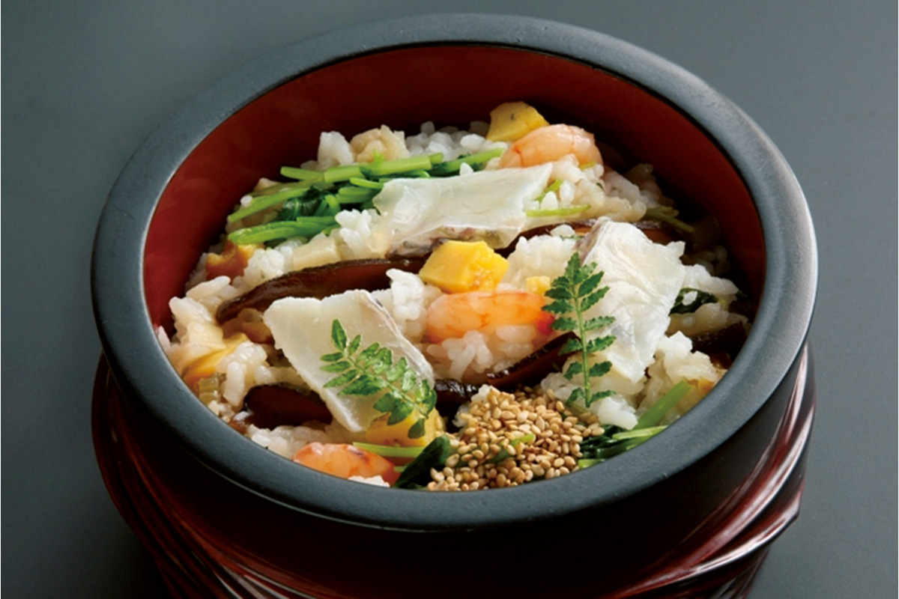
«Кумасотэй»
- Адрес
- префектура Кагосима, город Кагосима, Хигаси-Сэнгоку-тё, 6-10
- Телефон
- +81 99-222-6356
- Часы работы
- 11:00–14:30, 17:30–22:00
- Выходные
- без выходных
Ресторан «Карэн» принадлежит сельскохозяйственному объединению префектуры. Здесь подают кагосимскую чёрную говядину, которая в 2017 году победила на конкурсе вагю, а ещё чёрную свинью и чёрную курицу «Куро-Сацума-дори». Мясо готовят просто, чтобы был слышен его собственный вкус.
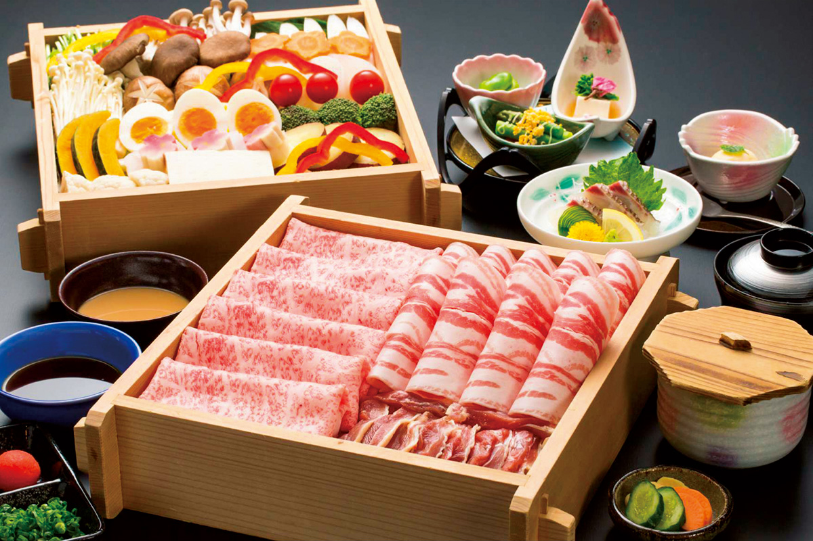
«Карэн», Кагосима
- Адрес
- префектура Кагосима, город Кагосима, Яманокути-тё, 3-12
- Телефон
- +81 99-223-8877
- Часы работы
- 11:30–14:00, 17:30–22:00
- Выходные
- третье воскресенье месяца
Ремёсла
Стекло и травы залива
Мастерская сацума-кирико «Дэсимару»
Резное стекло сацума-кирико начали делать в 1846 году по воле Нариакиры Симадзу (1809–1858), князя Сацумы, который строил в своём княжестве заводы на западный лад. В конце эпохи Эдо ремесло исчезло и возродилось лишь через сто лет. Хозяин мастерской «Дэсимару» в городе Кирисима пришёл в него одним из первых и сегодня рассказывает о нём гостям.
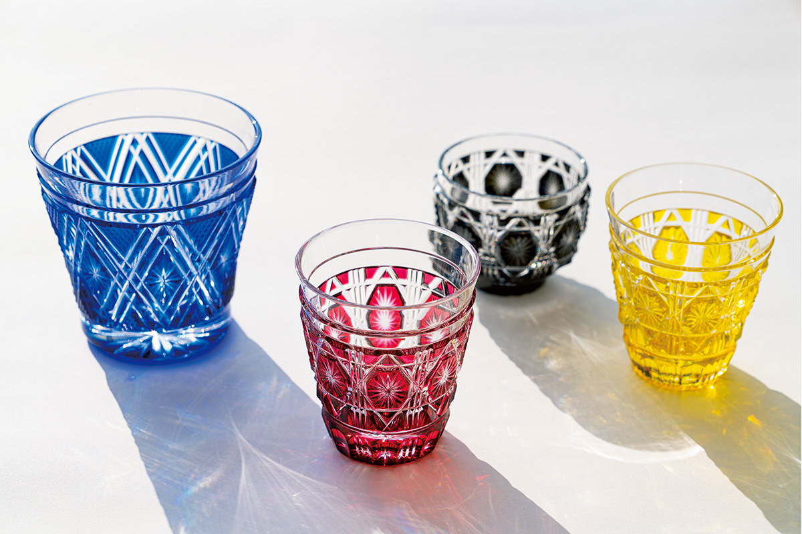
Лучше всего понять это стекло можно, если попробовать гранить самому. Мастер-класс по украшению стоил в 2021 году от 6600 иен, по стакану от 13 200 иен. Рекомендуем потом выпить из своего стакана сётю.
Мастерская сацума-кирико «Дэсимару»
- Адрес
- префектура Кагосима, город Кирисима, Кокубу-Симидзу, 1-19-27
- Телефон
- +81 995-73-6522
- Часы работы
- 9:30–18:00
- Выходные
- воскресенье
Botanical Factory: косметика из трав полуострова Осуми
Полуостров Осуми лежит на границе умеренного и субтропического пояса, и здесь сами растут альпиния гэтто и другие южные травы. Создатель Botanical Factory варит косметику из местных растений и только природных компонентов по собственным рецептам. Мастерская занимает здание закрытой начальной школы в посёлке Минамиосуми на самом юге полуострова.
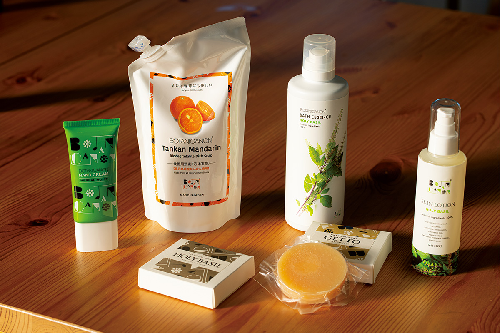
В мастерской проходят занятия: гости смешивают эфирные масла цитруса танкан, лемонграсса и других растений по вкусу и следят, как меняется аромат. Занятие можно устроить в любой день по запросу.
Botanical Factory
- Адрес
- префектура Кагосима, уезд Кимоцуки, посёлок Минамиосуми, Нэдзимэ-Хэта, 3310, бывшая начальная школа Нотао
- Телефон
- +81 994-24-3008
- Часы работы
- 9:00–18:00
- Выходные
- суббота, воскресенье, праздники и нерегулярно
Залив
С воды и с неба
Через залив Кинко ходят три паромные линии: к Сакурадзиме и между двумя полуостровами. Сесть на паром просто, и с ними маршрут вокруг залива становится гораздо свободнее.
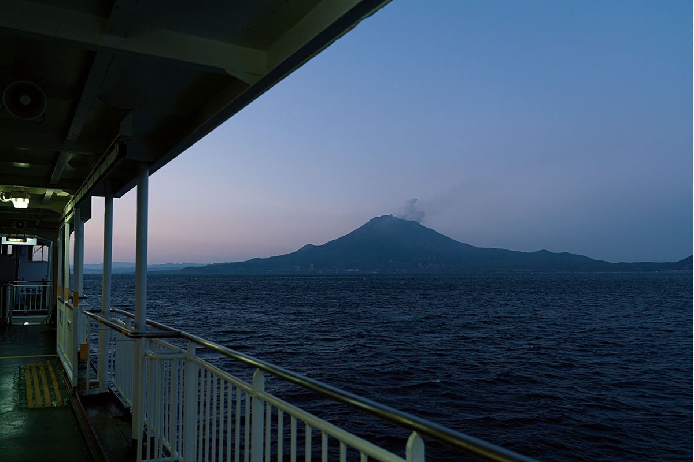
Паромы залива Кинко
- Телефон
- паром «Сакурадзима» из порта Кагосима, +81 99-293-2525
- Телефон
- паром из порта Камоикэ в Тарумидзу, +81 99-259-2888
- Телефон
- Ferry Nankyu из порта Ямакава в Нэдзимэ, +81 993-34-0012
Залив можно увидеть и с самолёта. Самый популярный полёт Kagoshima Sky View идёт вокруг Сакурадзимы и длится около 30 минут: в 2021 году он стоил 39 930 иен с налогом за самолёт, до трёх пассажиров. Вулкан под крылом выглядит грозно и близко.
Kagoshima Sky View
- Телефон
- +81 995-58-2211 (New Japan Aviation)
- Цены / Вход
- полёт над Сакурадзимой около 30 минут, 39 930 иен (2021)
- Как добраться
- из Токио (Ханэда) в Кагосиму летают JAL, ANA, Skymark и Solaseed Air, полёт около двух часов. Из аэропорта до станции Кагосима-Тюо идёт автобус, без остановок 38 минут.
Ужин
Automne: французская кухня в усадьбе Симадзу
Ради ужина в этом ресторане стоит приехать в город Кагосима специально. Automne работает в Manor House Shimadu Shigetomisoh, бывшей усадьбе рода Симадзу. На участке в 4000 цубо (около 13 000 квадратных метров) стоит дом в самурайском стиле, а в саду есть даже водопад. Днём отсюда открывается вид на Сакурадзиму прямо напротив, вечером в саду зажигают костры, и он выглядит сказочно.
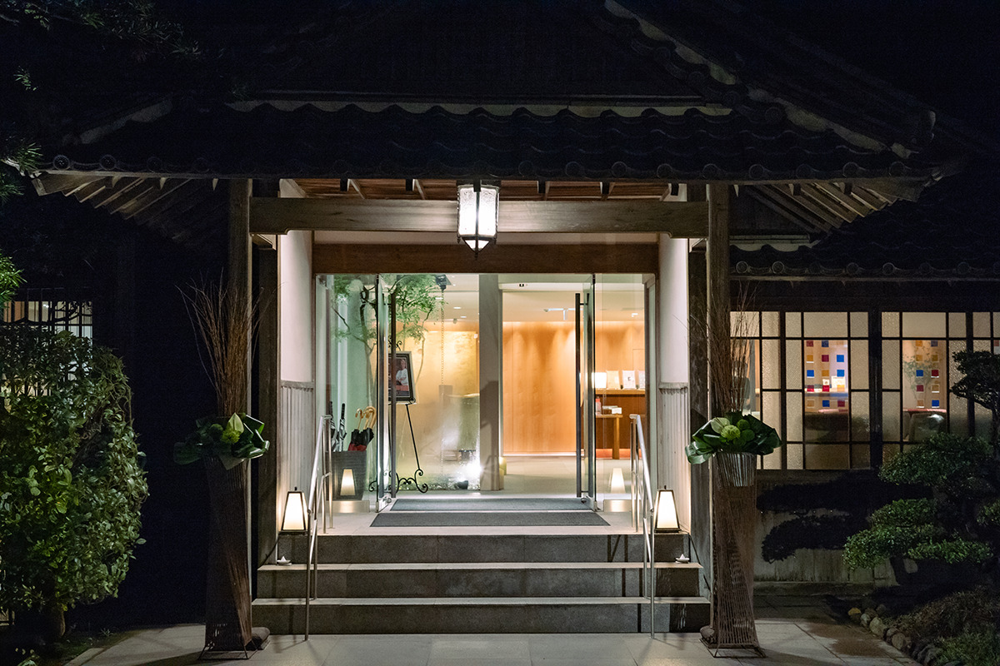
Шеф ресторана родом из Кагосимы. Он берёт как можно больше местных продуктов: рыбу-саблю, полосатого хрюка и другую рыбу из ближних вод, свежие овощи. Каждое блюдо он переиначивает по-своему, и каждый кусок удивляет. К ужину рекомендуем вина винодельни Цуно из соседней префектуры Миядзаки.
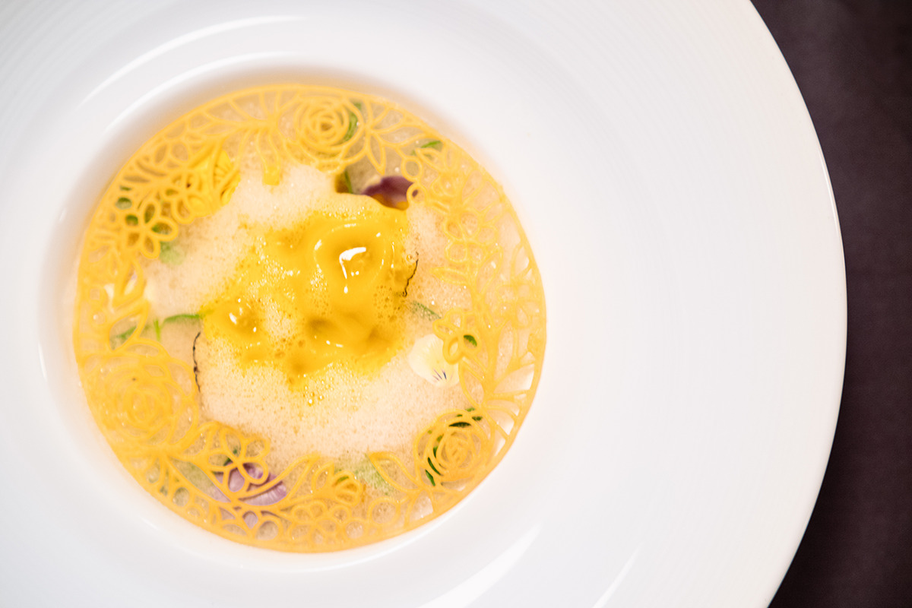
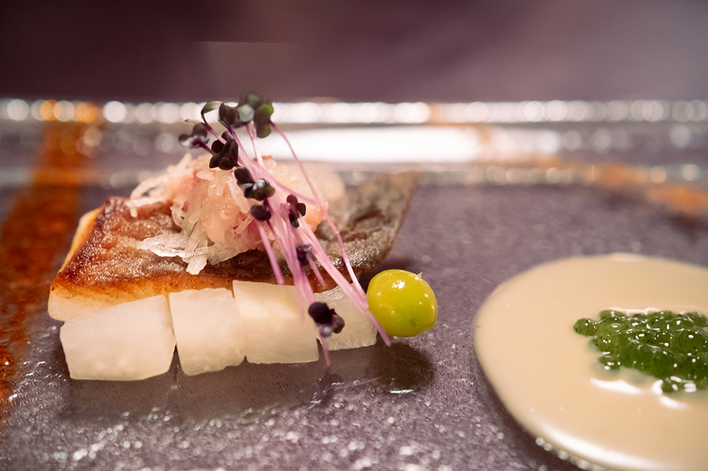
Automne, Manor House Shimadu Shigetomisoh
- Адрес
- префектура Кагосима, город Кагосима, Симидзу-тё, 31-7
Фото: Ацуси Ямахира, Роберт Иппэй.